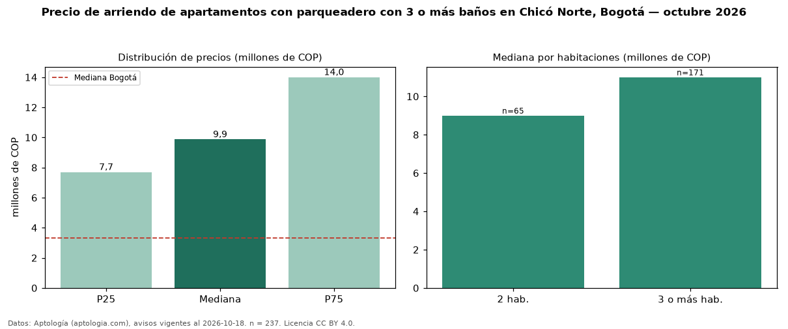

Precio de arriendo de apartamentos con parqueadero con 3 o más baños en Chicó Norte, Bogotá — octubre 2026
Con 237 avisos vigentes, el canon mediano de apartamentos con parqueadero con 3 o más baños en arriendo en Chicó Norte, Bogotá es COP 9,87 millones al mes. Frente a la mediana de los apartamentos con parqueadero en arriendo de Chicó Norte (COP 6,50 millones, n = 521), queda 52 % por encima; este segmento reúne el 45 % de esos avisos. Por metro cuadrado, la mediana es COP 63.525/m² al mes (n = 228), 6 % por debajo de los apartamentos con parqueadero en arriendo de Chicó Norte (COP 67.241/m²). El área mediana anunciada es 159 m². El segmento con más oferta es el de 3 o más habitaciones (171 avisos, mediana COP 11 millones); pasar de 2 habitaciones a 3 o más habitaciones cambia la mediana +22 %. La administración mediana declarada es COP 1,50 millones al mes (n = 148), aparte del canon. La mitad central de los avisos va de COP 7,70 millones a COP 14 millones (razón 1,8), una dispersión moderada. El estrato más frecuente es 6 (93 % de los avisos con estrato). Datos: Aptología (aptologia.com), CC BY 4.0 — https://www.aptologia.com/arriendo/bogota/chico-norte. Archivos: PDF, CSV con las cifras y gráfica PNG.

| Avisos únicos | 237 |
|---|---|
| Percentil 25 | COP 7.700.000 |
| Mediana | COP 9.870.000 |
| Percentil 75 | COP 14.000.000 |
| Mediana por m² | COP 63.525 |
Fuente: avisos vigentes de portales inmobiliarios recopilados por Aptología, deduplicados (mínimo 30 avisos únicos por celda). Precios pedidos, no cerrados. Fecha: 2026-10-18.